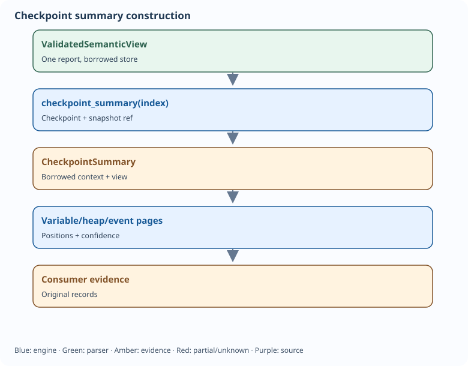
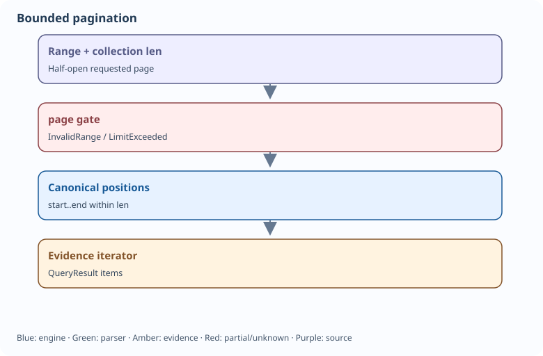
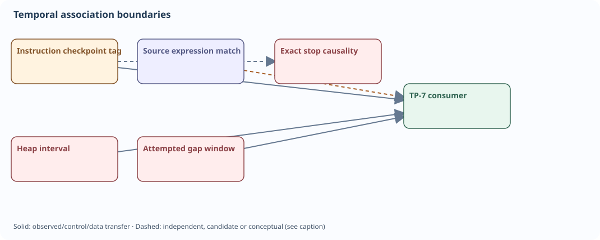

54 · TP-7 consumer evidence composition #
Key terms #
| Term | Plain meaning |
|---|---|
| Checkpoint summary | A convenient starting point for one saved stop and its related, qualified questions. |
| Explicit pagination | The caller chooses a start and end for each slice, at most 128 records. More results require another request. |
>
The big picture #
TP-7 is the public composition layer. It takes one validated view and one checkpoint and returns borrowed evidence with explicit positions, bounded pages and confidence. It does not build a second trace, a global object graph or a guessed temporal join.
checkpoint_summary() #
Signature: pub fn checkpoint_summary(&self, index: usize) -> QueryResult<CheckpointSummary<'_, 'a>> (src/trace_parser/consumer.rs:57-68). It calls checkpoint(index), creates a snapshot EvidenceRef, and stores both plus the validated view in CheckpointSummary (:50-55).
CheckpointSummary fields are intentionally small:
checkpoint: CheckpointEvidence<'a>— canonical observation and context;reference: EvidenceRef— trace-scoped snapshot citation;view: &'v ValidatedSemanticView<'a>— one validation pass, reused.
CheckpointEvidence itself contains the borrowed Observation, CheckpointContext and confidence. The summary does not clone the snapshot or variables.
Summary methods #
CheckpointSummary exposes recorded facts directly: snapshot_index, stop_id, attempted_instruction_position, pid, observation_complete, source_location and coverage (src/trace_parser/consumer.rs:116-144). session_diagnostics() returns session-wide reports and explicitly does not join them to this stop (:146-150). This is important: a Valgrind error at the same source line is not evidence about this checkpoint's allocation.
Variables and frames #
VariableScope is Local, Global or Caller(position) (:41-46). scope_len resolves the selected vector (:205-211). variable(scope, index) checks bounds, creates the correct EvidenceLocation, and delegates to view.variable() (:213-235). variables_page(scope, range) applies the shared page gate and returns an iterator (:239-246).
frame_activation(id) (:251-314) resolves a unique activation at this checkpoint, not a cross-stop lifetime. It rejects ID 0 as None, detects duplicate caller activations and local/caller collisions, and returns Unavailable for ambiguous cases. Local activation confidence is candidate if any local lacks an activation ID; caller confidence is definite only when the caller has no capture errors. Globals are available separately through VariableScope::Global.
Events, heap and gaps #
instruction_events_page(range) (:319-344) uses only events explicitly tagged checkpoint_id = Some(snapshot_index). The tag is definite; it is not proof of exact stop causality or source-expression execution. It computes the canonical start position with partition_point and returns borrowed events with references.
heap_interval_page(range) (:349-373) returns events between the previous retained snapshot's cumulative heap count and this one. The interval is a retained-snapshot boundary, not an exact event timestamp. Events inside it may belong to omitted stops; confidence is Candidate.
gaps_in_attempted_window(range) (:379-416) checks gap ordering, computes the previous retained snapshot's attempted position, and binary-searches gaps in (previous, current]. This is an attempted-position window, not a causal assignment to one stop.
Source and reports #
source_expressions_page(range) (:422-470) requires an optional AST registry and a recorded source location. It prefers the frame's full_file over the checkpoint's possibly relative file, but never joins by basename. It counts and pages matching expressions with a bounded on-demand scan; missing AST is Unavailable. Match confidence is Unavailable if cross-provider correlation is marked unavailable, otherwise Candidate. It never proves execution.
valgrind_errors_page(range) (:71-83) pages independent Valgrind errors. heap_events_page(allocation, range) (:88-113) resolves a trace-scoped allocation reference, pages its chronological event positions, and returns each event with its own reference. A foreign reference fails before numeric lookup.
Bounded pagination #
MAX_CONSUMER_PAGE is 128 (src/trace_parser/consumer.rs:16-18). page(range, len, collection):
- rejects
start > endorend > lenwithInvalidRange; - rejects
end - start > 128withLimitExceeded; - returns the half-open range unchanged.
There is no silent truncation and no clamping. 0..0 is a valid empty page. A page is a view into canonical positions; the iterator yields QueryResult items so a bad recorded reference is reported at its position.
More-than-128 example #
For a collection of 300 events, valid calls are 0..128, 128..256, and 256..300. 0..129 returns LimitExceeded { requested: 129, max: 128 }; 250..400 returns InvalidRange if the collection has only 300 entries. The caller must advance pages explicitly. This is an illustrative API sequence, not a captured trace.
Temporal relationships #
TP-7 keeps four different associations separate:
| Evidence | Meaning |
|---|---|
instruction_events_page | Events explicitly tagged with the checkpoint ID |
heap_interval_page | Heap events between retained snapshot counters |
gaps_in_attempted_window | Gaps in an attempted-position interval |
source_expressions_page | AST expressions whose source span contains the checkpoint line |
Only the first is a definite recorded tag. Heap and gap associations are candidate boundary windows. Source matches are static candidates. None is an exact instruction timestamp or a pointer provenance proof.
Tests #
tests/trace_parser_consumer_tp7.rs covers summary construction, bounded pages, source-expression paging, heap intervals, allocations, crash/fork scopes and the 128-entry limit. examples/stage1_public_consumer_audit.rs is the stable public consumer example. The tests validate behavior; DOC-3 did not rerun the full Stage 1 suite.
Diagram notes #
Checkpoint summary construction #


Bounded pagination #


Temporal associations #

